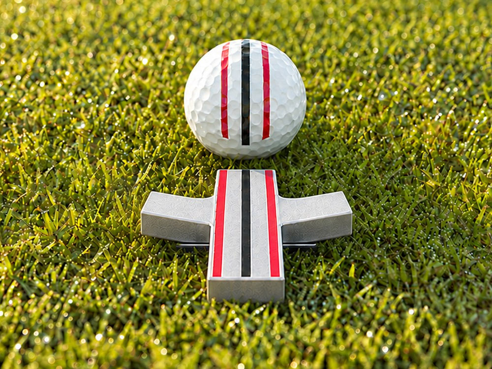
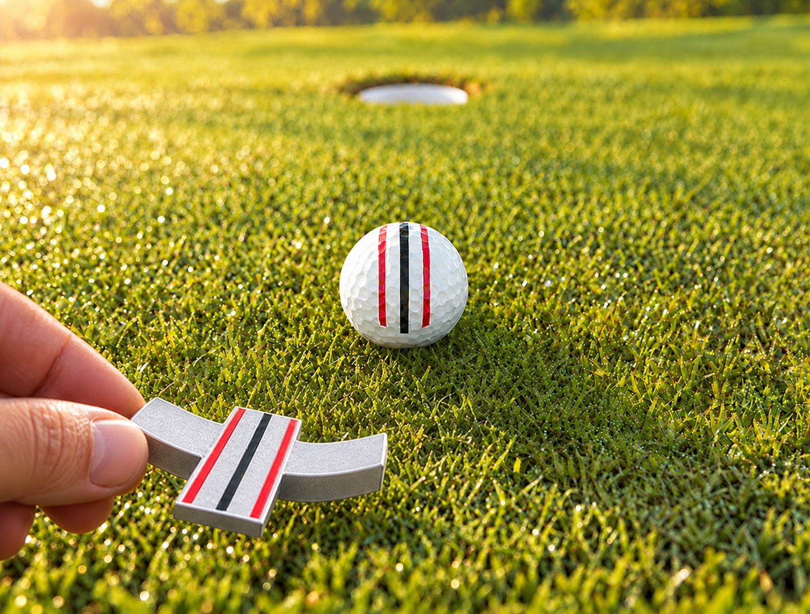
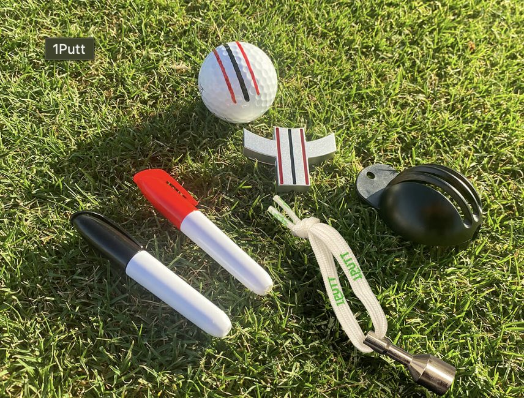

Designed by a 25-year PGA teaching professional
You don't have a putting stroke problem.
You have an aim problem.
The 1Putt is a ball marker and alignment tool designed to the USGA & R&A Equipment Rules ball-marker limits that removes the one variable golfers guess at most: where the ball is actually pointed before you ever take the putter back.
- Designed to USGA & R&A marker limits
- Legal for tournament play
- 30-day range guarantee
Pivot left or right from the bottom point Illustrated movement guide
Most golfers get the read right and the aim wrong — the ball drifts a few degrees in the ten seconds it takes to stand up and stroke it.
That's not a talent problem — it's a hand-eye handoff, and it happens to 8-handicaps and 28-handicaps alike. Jeff Sargent spent 25 years watching students make the same mistake, so he built a tool that separates the two jobs: read the break, lock the line in, then place the ball already aimed.
The three-step routine
Mark it. Aim it. Sink it.
The whole routine takes less time than re-marking your ball the old way — and every step is legal to use during a round.

Mark & read
Mark your ball from behind with the 1Putt, the same way you'd set down any ball marker — then read the break from all sides, just like you already do.
Aim & place
With the ball lifted, pivot the 1Putt left or right around its bottom point using your putter's grip. Once aimed down your chosen line, replace the ball with its three lines matched to the tool.

Remove & putt
Lift the 1Putt clear, leaving the ball aimed down your chosen line. Then address the ball and make your putt.
The line you can't see
Three lines. One invisible line to the hole.
The three lines on your ball and the three lines on the 1Putt have one job: when they're matched, they extend a single straight line from the ball to your target.
You'll never see it on the course. You'll see it in the cup.

What's inside
Everything you need. Nothing you don't.
- The 1Putt Machined aluminum ball marker that pivots for precision alignment, sized inside USGA marker limits.
- Alignment stencil Marks any golf ball with three lines that match the 1Putt exactly, every time.
- Two markers One black, one red — sized to the stencil so your lines stay crisp round after round.
- Magnetic lasso Clips to your belt or bag strap so the 1Putt is on hand for every green, not buried in a pocket.
Is this actually legal to use?
Yes — and here's the exact rule, not just our word for it.
The USGA and R&A Equipment Rules (Part 6, Rule 8) draw a clear line for ball markers used to help with alignment: the marker must stay under 1 inch in height, its alignment lines and appendages under 2 inches, and it can't measure or gauge slope, green speed, or other conditions. Cross those lines and it becomes an "alignment device," prohibited under Rule 4.3a. The 1Putt is machined inside those limits by design, so you can mark, aim, and remove it before every stroke — in practice or in competition. Read the rule on USGA.org ↗
The stencil marks are yours to keep on the ball. Drawing alignment lines onto a golf ball itself has never been against the Rules of Golf — it's the same reason factory three-line balls exist. The 1Putt just lets you put those lines on any ball, aimed exactly where you need them.
The USGA and R&A do not certify or endorse ball markers — the Equipment Rules simply define what's permitted. Confirm the final production dimensions against the rule before tournament play.
Yes. The 1Putt is designed to the USGA/R&A ball-marker limits, so it can be used to mark, align, and remove during stroke and match play — not just on the practice green. Confirm final production dimensions against the rule if you compete.
Yes. The stencil fits any standard golf ball, so you can mark your current supply — no need to switch to a specific ball brand or model.
Most golfers get a full season of marking out of the included markers. Refill kits (stencil + two markers) are available separately once the aluminum 1Putt itself — which doesn't wear out — is already in your bag.
Designed by a teacher, not a factory
25 years of students, one repeated mistake.
Jeff Sargent spent 25 years as a PGA teaching professional watching students of every handicap read the break correctly, then aim somewhere else entirely. The 1Putt is his answer: a precision tool that separates the read from the aim, so the ball is already pointed down the line you chose before you ever take the putter back.
Shop
Pick your setup
Every order ships with the full instructions and a 30-day range guarantee — if it doesn't earn a spot in your bag, send it back.
1Putt — Single
The complete kit: one 1Putt, stencil, two markers, magnetic lasso.
1Putt — Two-Pack
Two full kits — keep one, gift one, or split it with a playing partner. Ships free.
Refill kit
Stencil and two markers only — for 1Putt owners who just need fresh lines.
Proof, not promises
What golfers notice first
"I sank four long putts the very first round I used the 1Putt. It's going to help me break 80 this season."
Paul Rausch 13 handicap
"The 1Putt is the only golf accessory you can practice with that's USGA legal to use in competition. It will save you at least one shot every round. Ask any tour player what one shot per round means to their finish."
Chipper Cecil Director of Golf, Mission Hills Country Club (1981–2014), PGA Life Member
"My playing partners noticed before I said a word about it. My lag putts stop three feet short instead of six feet long or short."
Denise Okafor 19 handicap
Questions
Before you order
Orders placed before 1pm ET ship the same business day. Standard delivery is 1–3 business days within the continental US.
Use it for 30 days. If it hasn't earned a permanent spot in your bag, send it back for a full refund — no restocking fee.
Yes, we ship worldwide. International orders typically arrive within 7–14 business days.
Yes — the 1Putt is built to remove a variable, not add a skill to learn. Beginners and low-handicap players use the exact same routine.